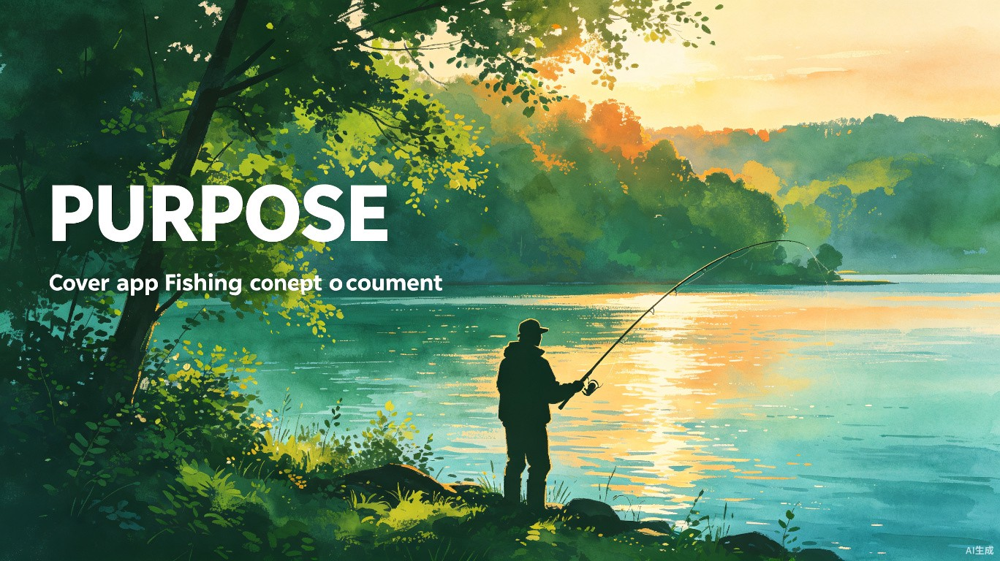

1.5亿钓鱼人的口袋助手 —— 用数据和AI，让每一次出钓都不虚此行
"钓鱼不是等待，而是一场与自然对话的艺术。我们做的，是让这场对话更顺畅。"
今日宜钓是一款面向1.5亿中国钓鱼爱好者的智能工具小程序。它整合天气鱼情、钓点导航、钓鱼日记与AI分析，解决"今天去哪钓、钓什么鱼、用什么饵"的核心问题，让新手更快入门，让老手更有收获。
钓鱼在中国不是小众爱好。它是仅次于跑步的第二大户外运动，参与人数接近1.5亿，年产值超过750亿元。但令人惊讶的是，这个庞大市场的数字化程度极低——绝大多数钓友仍在用微信群找钓点、靠经验判断鱼情。
更值得关注的是用户行为数据。重度钓鱼用户几乎每天都会查看天气和鱼情，这种高频刚需在其他垂直领域中非常罕见。而现有的头部产品（如"钓鱼人"APP）功能臃肿、体验陈旧，小程序端几乎空白——这正是个人开发者切入的黄金窗口。
今日宜钓不做大而全，而是围绕"出钓前-出钓中-出钓后"的完整场景，用三层递进的产品架构建立竞争壁垒。
钓鱼天气指数、钓点地图导航、鱼情预测、钓鱼日记。解决高频刚需，让用户每天打开。
鱼获分享、同城约钓、钓技交流。用社交关系提升留存，让一个人钓鱼变成一群人钓鱼。
AI鱼种识别、智能鱼情分析、钓位推荐、AI钓鱼助手。用数据智能建立长期壁垒。
MVP阶段聚焦六大核心功能，用最小成本验证需求：
| 功能 | 解决痛点 | 使用场景 |
|---|---|---|
| 钓鱼天气 | 不知道今天适不适合出钓 | 每天早上查看钓鱼指数 |
| 钓点地图 | 找钓点信息分散，靠口口相传 | 周末计划出钓，搜索附近钓点 |
| 鱼情预测 | 不知道什么鱼今天活跃 | 出钓前查看目标鱼种和最佳时段 |
| 钓鱼日记 | 钓鱼记录不方便，数据丢失 | 每次出钓后记录鱼获和饵料 |
| 鱼获分享 | 想晒鱼获但朋友圈不专业 | 钓到大鱼后分享到钓鱼社区 |
| 个人中心 | 缺乏成就感和数据回顾 | 查看年度钓鱼统计和等级成就 |
"以前我判断鱼情全靠经验，经常白跑一趟。现在打开'今日宜钓'，一看气压、水温、风向，再结合它推荐的鱼种和饵料，中鱼率明显提高。最重要的是它能记录我每次的鱼获，年底一看统计，今年钓了87条鲫鱼，成就感满满。"
"刚学钓鱼时完全摸不着头脑，买什么装备、去哪钓、用什么饵全是问题。'今日宜钓'里的钓技学堂救了我，从绑钩到调漂一步步教。现在我还经常用它约附近的钓友一起，有人带进步快多了。"
"我不差钱，但最怕买到不好用的装备。这个小程序里的渔具商城有真实钓友的评测，比淘宝评论靠谱多了。而且VIP会员还能看一些独家的优质钓点数据，这个钱花得值。"
现有竞品功能同质化严重，且以APP为主。今日宜钓从三个维度建立差异化：
| 维度 | 现有产品 | 今日宜钓 |
|---|---|---|
| 平台形态 | 以APP为主，下载成本高 | 小程序，即用即走，零门槛 |
| 产品定位 | 大而全，功能臃肿 | 工具优先，场景聚焦 |
| 数据智能 | 基础天气展示 | AI鱼情分析+个性化推荐 |
| 社区氛围 | 内容平台，PGC为主 | 工具驱动的UGC社区 |
| 变现路径 | 广告为主，体验差 | 电商佣金+会员订阅+钓场预订 |
不依赖广告，用服务和交易构建可持续的变现体系：
精选品牌入驻，CPS佣金模式。钓鱼佬年均装备消费数千至数万元，转化率天然高。
VIP专属钓点数据、商城折扣、免运费。钓鱼用户付费意愿强，复购率超80%。
在线预订钓位/鱼票，平台抽佣10%-15%。解决钓场获客难、钓友找场难的双方痛点。
渔具品牌精准投放。用户画像精准（25-55岁男性，高消费力），广告价值极高。
钓鱼天气、钓点地图、钓鱼日记、鱼获分享。uni-app + Python FastAPI，小程序快速上线验证。
社区Feed、同城约钓、钓技学堂。积累用户数据和UGC内容，建立早期社区氛围。
渔具商城、钓场预订、会员体系上线。开始产生收入，验证商业模式。
AI鱼种识别、智能鱼情分析、AI钓鱼助手。用数据智能建立长期壁垒，多平台扩展。
作为个人开发者，MVP阶段月均成本可控制在1000元以内：轻量服务器约200元/月，域名和认证约300元（一次性），第三方API约200元/月。前期通过自然增长和社群运营获客，无需广告投放。
1.5亿钓鱼人每天都在寻找更好的工具。小程序端几乎空白，AI赋能尚处早期，这是个人开发者入局的最好时机。
今日宜钓 —— 用数据和AI，让每一次出钓都不虚此行